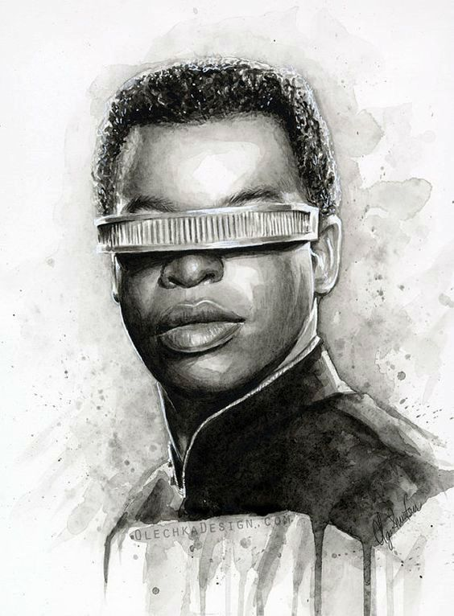

Geordi La Forge
Fictional Character

a portrait of Geordi.
A short list of facts about Geordi La Forge.
- La Forge was born February 16, 2335 in Mogadishu, Somalia
- He attended Zefram Cochrane High School[24] and then Starfleet Academy from 2353 to 2357.
- Geordi was born blind and wears a VISOR, an arc-shaped prosthetic attached at the temples that provides him with vision.
- In the alternate timeline of TNG series finale "All Good Things...", La Forge has, by 2395, married "Leah" and had three children (Alandra, Brett, and Sydney) with her.
- In 2017, IndieWire rated Geordi as the 8th best character on Star Trek: The Next Generation.
- Gene Roddenberry created the character in honor of George La Forge, a quadriplegic fan of the original Star Trek series, who died in 1975.
"One of the many misconceptions about the blind is that they have greater hearing, sense of smell and sense of touch than sighted people. This is not strictly true. Their blindness simply forces them to recognize gifts they always had but had heretofore largely ignored."
- Rosemary Mahoney
Geordi La Forge Wikipedia Click Here